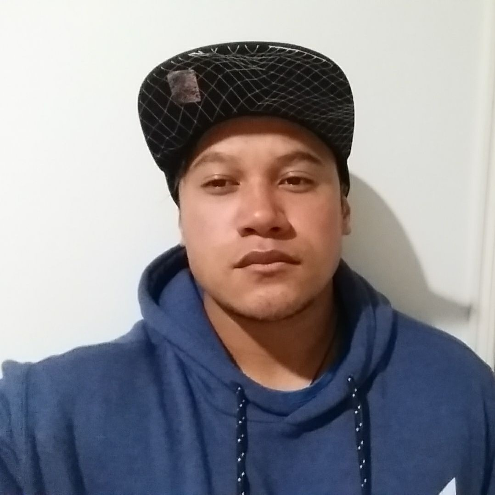

TARGET AUDIENCE
The target audience of the webpage is the private and public sector of agriculture in any country for developing clean and green farming which means chemical free.
The target audience of the webpage is the private and public sector of agriculture in any country for developing clean and green farming which means chemical free.
He's 40 years old, male, married, father of two children, and a graduate of Civil Engineering and Chief Executive Officer at DRKONSTRAKTURA INC. He has 12 years and counting expereince in civil enringeering industry. He's focused on providing the best service of the company as CEO and wanted to invest in agriculture farming as his latest goal in life.
He's 31 years old, male, single and a resident in Australia. He works as a construction personnel and a gymn instructor. He is focused and goal-oriented towards business.